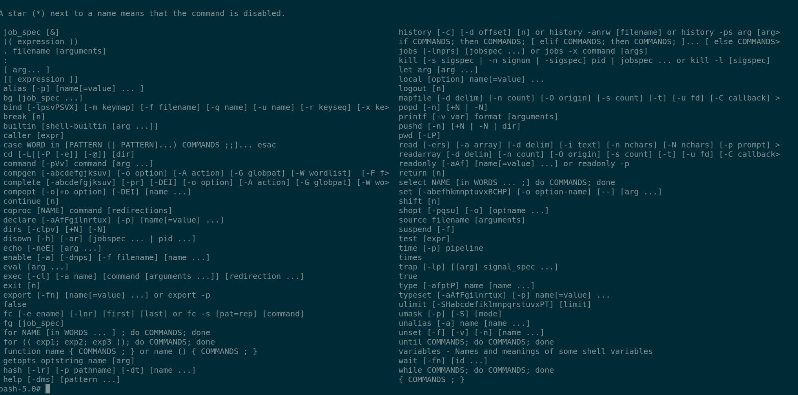

chroot
#Create a directory for that would be the new root.
progsri@machine:~/Desktop$ mkdir chroot
Since we need a sheel for the process to run, let say bash, we need to copy the binary and it's dependencies into the new root directory.
Use ldd to get all the dependencies for bash binary.
ldd /bin/bash
linux-vdso.so.1 (0x00007ffdc9fa9000)
libtinfo.so.6 => /lib/x86_64-linux-gnu/libtinfo.so.6 (0x00007f9d81990000)
libdl.so.2 => /lib/x86_64-linux-gnu/libdl.so.2 (0x00007f9d8198a000)
libc.so.6 => /lib/x86_64-linux-gnu/libc.so.6 (0x00007f9d81798000)
/lib64/ld-linux-x86-64.so.2 (0x00007f9d81b0e000)
cd /home/progsri/Desktop/chroot
mkdir bin
mkdir lib
mkdir lib64
copy the /bin/bash and all the libraries (dependencies) into the new bin,lib,lib64 directories in the new root.
Create the new root using chroot
progsri@machine:~/Desktop/chroot$ pwd
/home/progsri/Desktop/chroot
progsri@machine:~/Desktop/chroot$ sudo chroot ./ /bin/bash
bash-5.0#
Inside the new root only bash will be available and the other commands that come with the bash sheel such as pwd
, echo , kill . To find the list of available code that are in built use help
as seen below

Let us try to list inside the chroot
bash-5.0# ls
bash: ls: command not found
Observe the ls command is not found inside the chroot as we have not copied it
ldd /bin/ls
linux-vdso.so.1 (0x00007fff50fe0000)
libselinux.so.1 => /lib/x86_64-linux-gnu/libselinux.so.1 (0x00007f4a12461000)
libc.so.6 => /lib/x86_64-linux-gnu/libc.so.6 (0x00007f4a1226f000)
libpcre2-8.so.0 => /usr/lib/x86_64-linux-gnu/libpcre2-8.so.0 (0x00007f4a121df000)
libdl.so.2 => /lib/x86_64-linux-gnu/libdl.so.2 (0x00007f4a121d9000)
/lib64/ld-linux-x86-64.so.2 (0x00007f4a124d3000)
libpthread.so.0 => /lib/x86_64-linux-gnu/libpthread.so.0 (0x00007f4a121b6000)
copy all these to lib or lib64
cp /bin/ls ~/Desktop/chroot/bin
sudo chroot ~/Desktop/chroot/ /bin/bash
bash-5.0# ls
bin lib lib64
For netstat command let's copy the binary and dependencies into chroot , the below is the command output inside chroot
bash-5.0# netstat
Active Internet connections (w/o servers)
Proto Recv-Q Send-Q Local Address Foreign Address State
Active UNIX domain sockets (w/o servers)
Proto RefCnt Flags Type State I-Node Path
below is the netstat command output outside chroot
⇒ netstat
Active Internet connections (w/o servers)
Proto Recv-Q Send-Q Local Address Foreign Address State
udp 0 0 machine:bootpc _gateway:bootps ESTABLISHED
udp6 0 0 localhost:37896 localhost:37896 ESTABLISHED
udp6 0 0 localhost:38804 localhost:38804 ESTABLISHED
udp6 0 0 localhost:55223 localhost:55223 ESTABLISHED
Active UNIX domain sockets (w/o servers)
Proto RefCnt Flags Type State I-Node Path
unix 2 [ ] DGRAM 36896 /run/user/1001/systemd/notify
unix 2 [ ] DGRAM 27337 /var/spool/postfix/dev/log
unix 4 [ ] DGRAM 16115 /run/systemd/notify
unix 2 [ ] DGRAM 404612 /run/wpa_supplicant/wlo1
observe that inside the chroot, netstat does not display anything as netstat pulls the data from proc
file system and there is no access to proc from inside chroot. In order to access proc file system we would need to
mount it inside the chroot as below and then netstat would display the data for the entire system.
mkdir chroot_dir/proc
sudo mount -t proc /proc proc
sudo chroot chroot_dir /bin/bash
bash-5.0# netstat
Active Internet connections (w/o servers)
Proto Recv-Q Send-Q Local Address Foreign Address State
udp 0 0 machine:bootpc _gateway:bootps ESTABLISHED
udp6 0 0 localhost:37896 localhost:37896 ESTABLISHED
udp6 0 0 localhost:38804 localhost:38804 ESTABLISHED
udp6 0 0 localhost:55223 localhost:55223 ESTABLISHED
Active UNIX domain sockets (w/o servers)
Proto RefCnt Flags Type State I-Node Path
unix 2 [ ] DGRAM 36896 /run/user/1001/systemd/notify
unix 2 [ ] DGRAM 27337 /var/spool/postfix/dev/log
unix 4 [ ] DGRAM 16115 /run/systemd/notify
unix 2 [ ] DGRAM 404612 /run/wpa_supplicant/wlo1